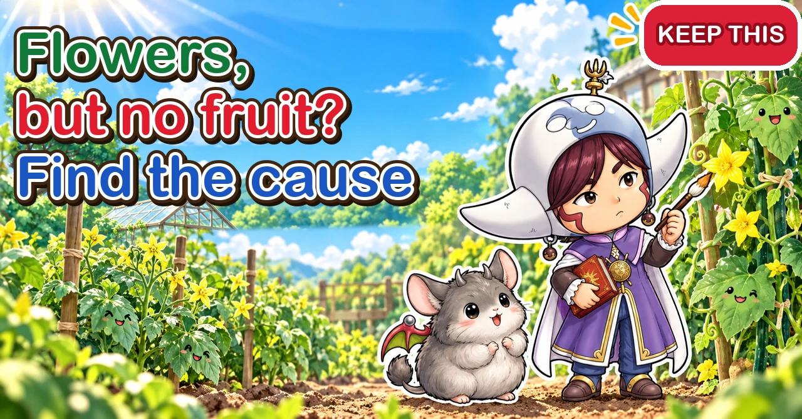
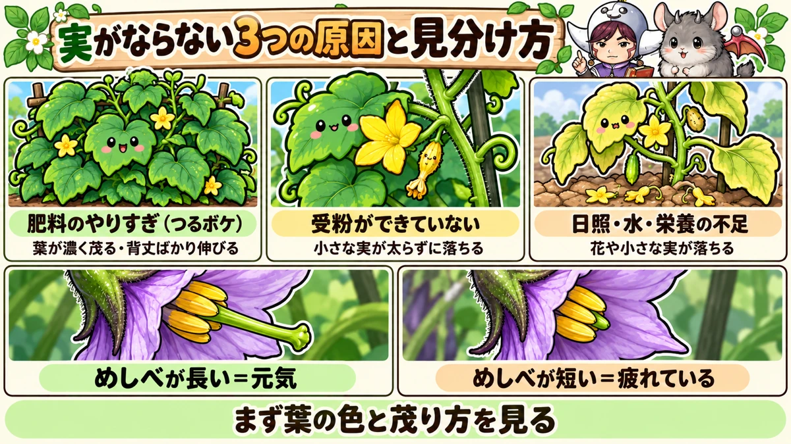
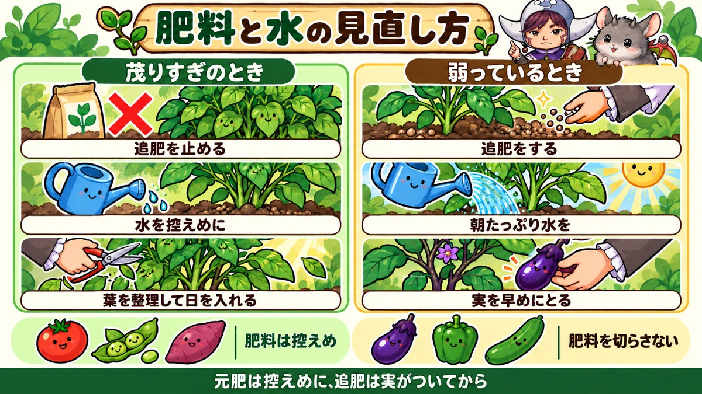

Flowers but no fruit 🍅 A complete guide to fruit set

🍅 “My summer vegetables are covered in flowers, but not a single fruit is forming.”
🍅 “The tiny fruit appears, then turns yellow and drops.”
🍅 “The plant looks healthy, so why is it growing leaves instead of vegetables?”
Hello, I'm Eiko. Eight years of growing vegetables organically and without pesticides, and a teaching licence in science.
Flowers are not the same as a harvest. A plant has to balance leaf and stem growth, pollination, water and nutrition before a small fruit can swell. This guide shows how to read the plant, what to do for each crop, and how to prepare the next bed so the same problem is less likely next year.
Where you are: the seasonal timings here are for a home garden in central Japan. Shift the months to your own climate, first frosts and rainy season. “Summer vegetables” means warm-season crops such as tomatoes, cucumbers, aubergines, peppers, okra, beans, watermelons and melons.
The essentials: the three broad causes are too much fertiliser, especially nitrogen; pollination that has not happened; and a shortage of light, water or nutrients. Read the plant before adding feed: a dark-green, crowded plant usually needs less, while a pale, thin plant may need support.
① Three reasons flowers do not become fruit
- Too much fertiliser: dark-green leaves, thick stems and long growth, but few flowers or flowers that drop. This is excessive vegetative or leafy growth. Stop or reduce side dressing and keep watering restrained.
- Pollination has not happened: flowers open, but the small fruit below a female flower stays thin, turns yellow and withers. Hand-pollinate, encourage insects or gently shake a tomato support.
- Not enough light, water or nutrition: a run of cloudy rainy-season weather, drought or exhausted feed leaves the plant without the strength to keep flowers and fruit. Keep water and feed steady and protect the plant’s vigour.

What this diagram says （図解の文字）
- Three causes of flowers failing to set fruit
- "Too much fertiliser: lush leaves and tall growth" ／ "Pollination has not happened: small fruit drops"
- "Not enough light, water or nutrients: flowers and small fruit drop"
- "A long stigma means a vigorous plant" ／ "A short stigma means a tired plant"
- "First look at leaf colour and growth"
② Why a flower can fail
Two kinds of growth happen together
A vegetable first builds its body: roots, stems and leaves. This is vegetative growth. It also flowers, makes fruit and leaves seed behind: reproductive growth. Tomatoes, cucumbers and aubergines need both at once. If the plant puts all its energy into its body, fruit does not set; if it carries too much fruit, the plant becomes exhausted.
Extra nitrogen pushes the plant towards leaves
When soil contains a lot of fertiliser, especially nitrogen, the plant behaves as if it has time to grow larger before it needs to reproduce. Leaves and stems thicken and spread, flowers become fewer or fall, and the plant can become excessively leafy. Okra can show the same excess as a large plant with very few flower buds.
Pollination is the signal for the fruit to swell
In many crops, pollen from the anther has to reach the stigma. Once pollination starts seed development, the flower receives the signal to enlarge its ovary. Without it, the tiny fruit below a female flower stays small, turns yellow and falls. Few insects, cool weather, rain and cloud can all make pollen transfer unreliable.
A weak plant lets flowers go
Sunlight makes the sugars that support fruit. Water carries nutrients and keeps the plant growing. If light, water or fertiliser is short, the plant cannot develop every flower and fruit, so it drops some to protect itself. A fallen flower is often the plant saying that it cannot afford the next fruit yet.
③ Read the plant before you act
Signs of too much feed
- Leaves are dark green, large and thick.
- Leaves curl inwards or form soft, crowded waves.
- Stems are thick, with long spaces between nodes.
- The plant grows taller and taller while flowers remain scarce.
- Flowers open but do not become fruit, or fall soon afterwards.
- Aphids and leaf-eating insects are numerous because the soft foliage is easy to feed on.
Signs of failed pollination
- The plant looks vigorous and has plenty of flowers.
- A tiny fruit below a female flower does not swell, then turns yellow, shrivels and drops.
- Bees and other visitors are rarely coming to the flowers.
- The problem appears in a cool spell or after rain and cloud.
Signs that the plant lacks strength
- Leaves are pale, with the lower leaves yellowing first.
- Stems are thin and flowers are small.
- Flowers and tiny fruit drop one after another.
- There has been a long cloudy spell, a dry spell or no side dressing for some time.
④ Crop by crop: what to check
Tomatoes: set the first truss
The lowest flower truss is important. If its fruit does not set, the plant may continue making leaves instead of fruit. Too much feed and a missed first truss are common reasons for poor setting. A tomato flower contains both anthers and a stigma; shaking the flower lets pollen fall. In still weather, tap the support, gently tap the truss with a finger or brush the flower with a small paintbrush.
There are also registered plant-hormone sprays that encourage tomato fruit set. If you use one, follow the label for the crop, timing and number of applications. Start by checking feed and pollination, since a light shake is often enough.
Tomatoes: start with modest feed
Tomatoes do not normally need a heavy amount of fertiliser. Keep the base dressing modest and wait until the first fruit begins to swell before side dressing, watching the plant as you go. A plant that has already received too much base fertiliser may take time to settle.
Cucumbers: female flowers and falling fruit
A cucumber that “does not fruit” may have no female flowers, or may have female flowers whose tiny cucumbers fail to swell. A female flower has a small cucumber below it, so check there first. If the upper leaves are lush, reduce side dressing. As one example, if you had been applying about 30 g of compound fertiliser per square metre every two weeks, halve the amount and split it weekly while you watch the plant.
Some varieties set few female flowers on the main stem. If you are training only the main stem, allow side shoots to grow; female flowers are more likely on side and secondary shoots. If female flowers form but turn yellow and fall, check light, water and feed. Cucumbers need plenty of water, so water thoroughly when dry weather continues.
Cucumbers: a crooked fruit has the same roots
Crooked cucumbers often point to lack of water or nutrition. Dry soil also prevents roots from taking up nutrients. Mulch helps keep the surface from drying, and a dry spell calls for a generous morning watering that soaks the root zone. Too many fruits can divide the plant’s supply; after a side shoot carries one or two fruits, leave about two leaves beyond them and pinch the tip to keep the number of shoots manageable.
Do not leave granular feed on cucumber leaves: their fine hairs hold the granules and the leaves can scorch. The roots spread widely and shallowly, so side dress around the shoulder of the bed rather than right against the stem.
Aubergines and peppers: look at the stigma
The flower has one central stigma surrounded by yellow anthers. A stigma that projects beyond the anthers suggests a vigorous plant. A stigma hidden among them suggests fatigue from lack of feed or water. Such flowers pollinate less reliably and are more likely to drop. Review water and side dressing, and harvest fruit young to reduce the load. Dark, curled leaves and an over-thick stem, on the other hand, suggest too much feed.
Okra: excessive vegetative growth
With too much nitrogen, okra can grow a large body with very few flower buds. A lush plant with hardly any pods may be in this excessive leafy state. Reduce or pause side dressing and keep water a little restrained. If the base dressing was excessive, recovery is not immediate; keep the plant healthy and buds may appear later. Remove leaves below harvested pods to improve airflow, because a large, soft plant also attracts insects.
One method is to make a shallow slit in the soil near the base and add a little chicken manure gradually; about 0.02 L (20 mL) per plant is sometimes quoted. Do not use that amount automatically on a plant with no buds: hold back and observe. Okra’s growing tip is delicate, so brush aphids away with a soft brush rather than rubbing them with fingers.
Edamame and beans: nitrogen can make a vine of leaves
Legumes house nitrogen-fixing bacteria in their roots and receive nitrogen from the air through that partnership. They usually need little fertiliser. Too much makes the plants tall, with long spaces between leaves, few flowers and few pods. Edamame in this state can reach about 1 m and may attract bugs such as stink bugs. Previous crop feed may still be in the soil, so be cautious.
A soil test kit can mix a sample with water and check nitrogen, phosphate, potassium and acidity with test strips. If the soil is rich, there is no instant way to remove it. Mix in unfertilised soil to dilute it if you have some, or grow several hungry crops over time so they use the surplus.
Watermelons and melons: hand pollination is dependable
Male and female flowers are separate, and a female flower has a small fruit below it. Insects can carry pollen, but hand pollination is the dependable option. Pollen is often ready in the morning, with about 10 am as a rough guide, though temperature and weather can shift the time. On a cold, cloudy morning, pollen may not appear until the afternoon. Check that the anthers are releasing yellow pollen before you begin.
When watermelon is setting fruit, bees, ants and other insects may be moving between flowers. Avoid unnecessary insect repellent and insecticide then. Pumpkin also has separate flowers, but its large flowers attract bees well; hand-pollinate if insects are scarce or rain persists. Early-planted courgettes can lack visitors, so use a male flower in the morning to dust the female stigma.
Strawberries: incomplete pollination makes odd fruit
Insufficient pollination can leave a strawberry small, misshapen or dark in the centre. Flowers opening around March may have few insects, so touch the centre gently several times with a paintbrush or the soft end of a cotton bud. Once the weather warms, insects can take over. Pick an unpollinated fruit early because it consumes the plant’s supply; flowers with fresh yellow pollen can still be hand-pollinated, while a flower whose anthers have dried is too late.
Sweet potatoes: too much feed makes leaves, not tubers
Sweet potatoes produce tubers rather than fruit, but the same imbalance appears as vines and leaves growing while the tubers stay small. They tolerate lean soil, so keep the base dressing modest.

What this diagram says （図解の文字）
- How to hand-pollinate
- "Male flower" ／ "Female flower"
- "1 Check pollen in the morning" ／ "2 Remove the petals" ／ "3 Touch the stigma" ／ "4 Label the pollination date"
- "Shake a tomato support" ／ "Brush strawberry flowers"
- "Aim for about 10 am; check that pollen is showing"
⑤ Prepare before the first flower
Many fruit-setting problems are reduced by preparation before planting and before the first flower opens. Use a modest base dressing, choose a sunny and airy position, and put supports in place so the plant does not collapse. Once the first flower opens, help pollination and protect the first fruit. A first fruit can shift the plant towards fruiting and make later flowers more likely to set.
⑥ How to hand-pollinate
Tell male and female flowers apart
Watermelons, melons, pumpkins, courgettes and cucumbers have separate male and female flowers. The female has a tiny fruit at the base; the male has none. Look at the flower stalk rather than guessing from the petals.
Cucumbers are the exception: many varieties can swell fruit without pollination (parthenocarpy), so they usually fruit without hand pollination.
The six-step method
- On a dry morning, find a male flower that opened that day.
- Check that yellow pollen is showing on its anthers.
- Pick the male flower at the base and remove the petals to expose the anthers.
- Rub the anthers gently over the stigma in the centre of a female flower that opened that day.
- Cover the whole stigma evenly with pollen.
- Label the female flower with the date.
The date helps you estimate harvest, especially for watermelons and melons where the number of days after pollination is used as a guide.
Rainy days and missing male flowers
Rain wets and clumps pollen, so use a dry morning after the rain. If rain is due later, work while the flower is dry. Male and female flowers do not always open together; use a male flower from a neighbouring plant of the same crop if necessary.
Crop-specific methods
For pumpkins, remove the male petals and brush the exposed anthers over the large female flower. For strawberries, tap the round centre gently several times with a brush or soft cotton tip, moving across it evenly. For tomatoes, aubergines and peppers, tap the support or flower truss, or brush the flower, because both sexes are in one flower.
Invite pollinators
Bees and other insects are valuable helpers. During the setting period, avoid spraying insecticide or repellent casually around flowers. Flowers planted nearby can make the area more attractive to visitors.
⑦ Review feed and water
When the plant is too lush
- Pause or reduce side dressing for a while.
- Keep watering modest rather than making the plant even softer.
- Thin side shoots and crowded leaves so light and air reach the flowers.
- Once one fruit has set, protect it; fruiting can calm the plant’s vegetative push.
Excess base fertiliser cannot be corrected overnight. Watch for gradual fruit set instead of adding still more feed.
When the plant is short of feed
Pale leaves, lower leaves turning yellow and a thin plant can justify side dressing. In aubergines and peppers, more flowers with short stigmas are another reason to review feed and water. Harvest fruit promptly: leaving large fruit on the plant tires it.
When water is short
Cucumbers and aubergines are especially thirsty. After a dry run, water generously in the morning so it reaches the root zone. Mulch or straw keeps the surface from drying so quickly.
When light is short
Long cloudy weather in the rainy season makes flowers fall more readily. The weather cannot be changed, but removing congested leaves and side shoots lets in what light there is. Keep water and feed steady so the plant can respond when the sun returns.

What this diagram says （図解の文字）
- Reviewing feed and water
- "When growth is too lush: stop side dressing" ／ "Water sparingly" ／ "Thin leaves and let in light"
- "When the plant is weak: side dress" ／ "Water generously in the morning" ／ "Harvest fruit early"
- "Keep feed modest for tomatoes, edamame and sweet potatoes" ／ "Side dress after fruit sets" ／ "Do not stop feed for aubergines, peppers and cucumbers"
⑧ A weekly or twice-weekly check
Look once or twice a week and write down the last feed. A note makes it easier to tell whether the plant has received too much or too little.
- Leaves: are they too dark or too pale? Are they curling and becoming crowded?
- Stem: is it too thick or too thin, with unusually long spaces between nodes?
- Flowers: are flowers opening, and are female flowers present on cucurbits?
- Stigmas: do aubergine and pepper stigmas project beyond their anthers?
- Tiny fruit: is it swelling, or turning yellow and dropping?
- Insects: are bees visiting, and are aphids increasing?
- Soil: is it bone-dry or constantly wet?
- Last side dressing: when, what and how much?
⑨ Set up next year’s bed
Keep the base dressing modest
Even fruiting crops can become all leaf when the base dressing is heavy. Be particularly restrained with tomatoes, beans, sweet potatoes and okra. Remember what was grown in the bed before: unused fertiliser may still be there.
Tomatoes: wait until fruit has begun to swell
Start side dressing tomatoes after the first fruit begins to grow (for aubergines, peppers and cucumbers, keep feed from running out once fruit starts to set). Feeding before fruit set can push the plant back towards body-building.
Choose varieties that set more readily
Some tomato varieties have parthenocarpic tendencies, meaning they can set fruit without pollination. They suit gardeners who cannot hand-pollinate, but too many fruits can make each one small, so thin the load if needed.
Plant at the right time
Planting too early means low temperatures and few insects, so pollination can fail. Follow the local planting window or hand-pollinate early flowers.
⑩ Crops do not all want the same amount of feed
- Keep feed available: aubergines, peppers and cucumbers keep producing fruit, so side dressing helps maintain strength.
- Use restraint: tomatoes, beans and sweet potatoes need less; excess can cause lush growth and poor set.
- Watch okra: too much feed easily produces a large plant with few buds.
If several crops share one bed, vary the amount by crop or group plants with similar feeding needs.
⑪ Through the season (central Japan)
- March–April: prepare soil with modest base feed; hand-pollinate early strawberry flowers while insects are scarce.
- May: plant warm-season crops; when the first tomato flowers open, shake the support to help set.
- June: hand-pollinate watermelon and melon in the morning and label the date; tidy crowded growth before the rainy season.
- July: flowers may drop until the rainy season ends; keep water and feed steady and watch aubergine and pepper stigmas.
- August–September: watch okra and edamame for excessive vegetative growth and hold back fertiliser.
⑫ Where advice differs
Does every crop need hand pollination?
Watermelons and melons are often hand-pollinated for certainty. Pumpkins have large flowers that attract insects, so some gardeners leave them to the bees. The right choice depends on the visitors and the season; watch fruit set and help when needed.
Should water be restricted or increased?
Restricting water can calm an over-lush plant, while cucumbers and aubergines with pale, weak growth need generous water. Both recommendations can be right: decide from the plant’s shape rather than applying one rule to every crop.
Should a hormone spray be used?
A registered tomato fruit-set spray can help when certainty matters, but many plants set with a shake or brush. Review feed and pollination first. If you use a product, follow its permitted crop, timing and number of applications.
⑬ Common mistakes
Adding feed without checking the leaves
A plant with no fruit can look as if it needs help, but dark-green, lush leaves usually mean it already has too much. More feed makes leaves, not fruit.
Spraying near flowers
Insecticide and repellent can drive away the bees that carry pollen. Avoid casual sprays during the setting period.
Pollinating in the afternoon
On a hot afternoon pollen may no longer be in good condition. Work while fresh pollen is showing in the morning.
Ignoring the first tomato truss
Shake the support when the first flowers open so the first fruit has a chance to set.
Planting edamame after a heavily fed crop
Residual fertiliser can make a bean plant all leaf. Edamame can tolerate a very lean start.
⑭ Questions
There are lots of flowers but no fruit at all
Start with leaf colour and shape. Dark, lush leaves suggest excess feed; pale leaves suggest shortage; a vigorous plant with thin, yellowing fruit suggests failed pollination. On cucurbits, check whether female flowers are present rather than only male flowers.
My cucumber has only male flowers
Male flowers often appear first on the lower main stem, while female flowers are more common higher up and on side shoots. Let a small plant grow and allow side shoots to develop.
Tomato flowers fall with the whole flower stalk
Pollination may have failed, or the plant may be out of balance. Check crowded leaves, cloudy weather and excess feed, then shake the support when flowers open.
Aubergine flowers drop straight away
Look at the stigma. If it is short and hidden, review feed and water and harvest fruit sooner.
My pepper is making fewer fruits
Fruit left too long can tire the plant. Harvest early, check stigma length and side dress and water if the flowers are weak. Thin inward-facing branches if the centre is crowded.
Should I hand-pollinate melons?
Yes, for certainty. Dust a female flower on a side or secondary shoot with pollen from a male flower opened that morning, and label the date for harvest planning.
When will excessive vegetative growth correct itself?
Not immediately if the base dressing was heavy. Stop side dressing, keep water restrained and wait for the plant to use what is already in the soil. Okra may form buds later as the season advances.
My watermelon has no female flowers yet
A young vine may make male flowers first. Wait for the plant to grow; if leaves and vines are excessively lush, hold back feed.
Fruit formed and then dropped
Pollination may have succeeded but the plant may lack strength, or too many fruits may be competing. Review water and feed, thin crowded growth and let supplies reach each fruit.
Hand pollination failed
The male may not have released enough pollen, the female may not have opened fully, or the flower may have been open too long. Use flowers opened that morning, check for pollen and avoid wet flowers.
My bitter gourd or pumpkin has only male flowers
Cucurbits often produce male flowers first while the vine is starting. Wait for the plant to grow; once a female flower opens, use that morning’s male flower.
Do containers need hand pollination?
Balconies have fewer insects. Shake tomato supports and flower trusses, and hand-pollinate cucurbits (except cucumbers) so fruit is more likely to set.
🔬 The science: why fruit set changes
Why nitrogen delays fruit: nitrogen is building material for stems and leaves. When it is plentiful, the plant spends more energy on foliage and less on flowers and fruit. A dense canopy also blocks light inside the plant. Fruit set needs a balance of nutrients, not nitrogen alone.
Why pollination makes fruit swell: after pollen reaches the stigma, seeds begin to form. The developing seed sends signals that draw the plant’s supplies into the ovary. Without that signal, the ovary stays small and drops. In strawberries, the parts that were not pollinated remain small, making the fruit uneven.
Why a weak plant drops flowers: fruit requires water and the sugars made by photosynthesis. A plant short of light or water cannot support every fruit, so it sheds flowers and tiny fruit to protect the rest of its body.
Why stigma length shows vigour: in an aubergine, pollen spills from the anthers around the centre and needs to reach the stigma. A long stigma projects into that pollen; a short one is hidden inside the anthers. Fatigue can therefore be seen in the flower before it is obvious in the leaves.
Why the first fruit can calm the plant: once one fruit starts to swell, supplies are directed towards it. The plant’s rush to make leaves and stems gradually eases, and later flowers can set more readily. This is why the first tomato truss matters.
To sum up
- ✅ The three broad causes are excess fertiliser, failed pollination, and insufficient light, water or nutrients.
- ✅ Dark, lush growth calls for less side dressing and restrained water; pale, weak growth calls for a careful review of feed and water.
- ✅ Help the first tomato truss by shaking the support. Hand-pollinate watermelons and melons in the morning and label the date.
- ✅ Read aubergine and pepper flowers: a long stigma suggests strength, a short stigma suggests fatigue.
- ✅ Keep base dressing modest and begin side dressing tomatoes after fruit has started. Feed cucumbers, aubergines and peppers steadily.
- ✅ Watch the plant once or twice a week and record feed, water, flowers and tiny fruit.
Thank you for reading all the way to the end! When flowers open without fruit, look at the plant’s leaves and flowers first. They usually tell you whether the next step is less feed, better pollination or more support 🍅
Thank you for reading!